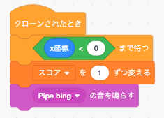

<!DOCTYPE html>
<html>
<head>
<title>hint.md</title>
<meta http-equiv="Content-type" content="text/html;charset=UTF-8">

<style>
/*---------------------------------------------------------------------------------------------
 *  Copyright (c) Microsoft Corporation. All rights reserved.
 *  Licensed under the MIT License. See License.txt in the project root for license information.
 *--------------------------------------------------------------------------------------------*/

body {
	font-family: "Segoe WPC", "Segoe UI", "SFUIText-Light", "HelveticaNeue-Light", sans-serif, "Droid Sans Fallback";
	font-size: 14px;
	padding: 0 12px;
	line-height: 22px;
	word-wrap: break-word;
}

#code-csp-warning {
	position: fixed;
	top: 0;
	right: 0;
	color: white;
	margin: 16px;
	text-align: center;
	font-size: 12px;
	font-family: sans-serif;
	background-color:#444444;
	cursor: pointer;
	padding: 6px;
	box-shadow: 1px 1px 1px rgba(0,0,0,.25);
}

#code-csp-warning:hover {
	text-decoration: none;
	background-color:#007acc;
	box-shadow: 2px 2px 2px rgba(0,0,0,.25);
}


body.scrollBeyondLastLine {
	margin-bottom: calc(100vh - 22px);
}

body.showEditorSelection .code-line {
	position: relative;
}

body.showEditorSelection .code-active-line:before,
body.showEditorSelection .code-line:hover:before {
	content: "";
	display: block;
	position: absolute;
	top: 0;
	left: -12px;
	height: 100%;
}

body.showEditorSelection li.code-active-line:before,
body.showEditorSelection li.code-line:hover:before {
	left: -30px;
}

.vscode-light.showEditorSelection .code-active-line:before {
	border-left: 3px solid rgba(0, 0, 0, 0.15);
}

.vscode-light.showEditorSelection .code-line:hover:before {
	border-left: 3px solid rgba(0, 0, 0, 0.40);
}

.vscode-dark.showEditorSelection .code-active-line:before {
	border-left: 3px solid rgba(255, 255, 255, 0.4);
}

.vscode-dark.showEditorSelection .code-line:hover:before {
	border-left: 3px solid rgba(255, 255, 255, 0.60);
}

.vscode-high-contrast.showEditorSelection .code-active-line:before {
	border-left: 3px solid rgba(255, 160, 0, 0.7);
}

.vscode-high-contrast.showEditorSelection .code-line:hover:before {
	border-left: 3px solid rgba(255, 160, 0, 1);
}

img {
	max-width: 100%;
	max-height: 100%;
}

a {
	color: #4080D0;
	text-decoration: none;
}

a:focus,
input:focus,
select:focus,
textarea:focus {
	outline: 1px solid -webkit-focus-ring-color;
	outline-offset: -1px;
}

hr {
	border: 0;
	height: 2px;
	border-bottom: 2px solid;
}

h1 {
	padding-bottom: 0.3em;
	line-height: 1.2;
	border-bottom-width: 1px;
	border-bottom-style: solid;
}

h1, h2, h3 {
	font-weight: normal;
}

h1 code,
h2 code,
h3 code,
h4 code,
h5 code,
h6 code {
	font-size: inherit;
	line-height: auto;
}

a:hover {
	color: #4080D0;
	text-decoration: underline;
}

table {
	border-collapse: collapse;
}

table > thead > tr > th {
	text-align: left;
	border-bottom: 1px solid;
}

table > thead > tr > th,
table > thead > tr > td,
table > tbody > tr > th,
table > tbody > tr > td {
	padding: 5px 10px;
}

table > tbody > tr + tr > td {
	border-top: 1px solid;
}

blockquote {
	margin: 0 7px 0 5px;
	padding: 0 16px 0 10px;
	border-left: 5px solid;
}

code {
	font-family: Menlo, Monaco, Consolas, "Droid Sans Mono", "Courier New", monospace, "Droid Sans Fallback";
	font-size: 14px;
	line-height: 19px;
}

body.wordWrap pre {
	white-space: pre-wrap;
}

.mac code {
	font-size: 12px;
	line-height: 18px;
}

pre:not(.hljs),
pre.hljs code > div {
	padding: 16px;
	border-radius: 3px;
	overflow: auto;
}

/** Theming */

.vscode-light,
.vscode-light pre code {
	color: rgb(30, 30, 30);
}

.vscode-dark,
.vscode-dark pre code {
	color: #DDD;
}

.vscode-high-contrast,
.vscode-high-contrast pre code {
	color: white;
}

.vscode-light code {
	color: #A31515;
}

.vscode-dark code {
	color: #D7BA7D;
}

.vscode-light pre:not(.hljs),
.vscode-light code > div {
	background-color: rgba(220, 220, 220, 0.4);
}

.vscode-dark pre:not(.hljs),
.vscode-dark code > div {
	background-color: rgba(10, 10, 10, 0.4);
}

.vscode-high-contrast pre:not(.hljs),
.vscode-high-contrast code > div {
	background-color: rgb(0, 0, 0);
}

.vscode-high-contrast h1 {
	border-color: rgb(0, 0, 0);
}

.vscode-light table > thead > tr > th {
	border-color: rgba(0, 0, 0, 0.69);
}

.vscode-dark table > thead > tr > th {
	border-color: rgba(255, 255, 255, 0.69);
}

.vscode-light h1,
.vscode-light hr,
.vscode-light table > tbody > tr + tr > td {
	border-color: rgba(0, 0, 0, 0.18);
}

.vscode-dark h1,
.vscode-dark hr,
.vscode-dark table > tbody > tr + tr > td {
	border-color: rgba(255, 255, 255, 0.18);
}

.vscode-light blockquote,
.vscode-dark blockquote {
	background: rgba(127, 127, 127, 0.1);
	border-color: rgba(0, 122, 204, 0.5);
}

.vscode-high-contrast blockquote {
	background: transparent;
	border-color: #fff;
}
</style>

<style>
/* Tomorrow Theme */
/* http://jmblog.github.com/color-themes-for-google-code-highlightjs */
/* Original theme - https://github.com/chriskempson/tomorrow-theme */

/* Tomorrow Comment */
.hljs-comment,
.hljs-quote {
	color: #8e908c;
}

/* Tomorrow Red */
.hljs-variable,
.hljs-template-variable,
.hljs-tag,
.hljs-name,
.hljs-selector-id,
.hljs-selector-class,
.hljs-regexp,
.hljs-deletion {
	color: #c82829;
}

/* Tomorrow Orange */
.hljs-number,
.hljs-built_in,
.hljs-builtin-name,
.hljs-literal,
.hljs-type,
.hljs-params,
.hljs-meta,
.hljs-link {
	color: #f5871f;
}

/* Tomorrow Yellow */
.hljs-attribute {
	color: #eab700;
}

/* Tomorrow Green */
.hljs-string,
.hljs-symbol,
.hljs-bullet,
.hljs-addition {
	color: #718c00;
}

/* Tomorrow Blue */
.hljs-title,
.hljs-section {
	color: #4271ae;
}

/* Tomorrow Purple */
.hljs-keyword,
.hljs-selector-tag {
	color: #8959a8;
}

.hljs {
	display: block;
	overflow-x: auto;
	color: #4d4d4c;
	padding: 0.5em;
}

.hljs-emphasis {
	font-style: italic;
}

.hljs-strong {
	font-weight: bold;
}
</style>

<style>
/*
 * Markdown PDF CSS
 */

 body {
	font-family:  "Meiryo", "Segoe WPC", "Segoe UI", "SFUIText-Light", "HelveticaNeue-Light", sans-serif, "Droid Sans Fallback";
}

pre {
	background-color: #f8f8f8;
	border: 1px solid #cccccc;
	border-radius: 3px;
	overflow-x: auto;
	white-space: pre-wrap;
	overflow-wrap: break-word;
}

pre:not(.hljs) {
	padding: 23px;
	line-height: 19px;
}

blockquote {
	background: rgba(127, 127, 127, 0.1);
	border-color: rgba(0, 122, 204, 0.5);
}

.emoji {
	height: 1.4em;
}

/* for inline code */
:not(pre):not(.hljs) > code {
	color: #C9AE75; /* Change the old color so it seems less like an error */
	font-size: inherit;
}

/* Page Break : use <div class="page"/> to insert page break
-------------------------------------------------------- */
.page {
	page-break-after: always;
}

</style>

</head>
<body>
<h1 id="%EF%BC%88%E8%AA%B2%E9%A1%8C%EF%BC%89%E3%83%95%E3%83%A9%E3%83%83%E3%83%94%E3%83%BC%E3%83%90%E3%83%BC%E3%83%89%EF%BC%9A%E3%83%92%E3%83%B3%E3%83%88">（課題）フラッピーバード：ヒント</h1>
<p>りんごキャッチゲームが完成したところで、２つ目の課題はフラッピーバードというゲームです。<br>
基本的なゲーム開発の仕方はりんごキャッチと同じため、新たな機能の利用などに絞ってサンプルのコードでヒントを提供します。</p>
<h2 id="%E7%9B%AE%E6%AC%A1">目次</h2>
<ul>
<li>
<p><strong>ファイルのフォルダ分け</strong><br>
画像ファイルや音ファイルの読み込みで利用します。</p>
</li>
<li>
<p><strong>スペースキーの割り当て</strong><br>
スプライトが飛ぶ動作で利用します。</p>
</li>
<li>
<p><strong>シーンのライフサイクル</strong><br>
画面遷移で利用します。</p>
</li>
<li>
<p><strong>スプライトの当たり判定</strong><br>
鳥と地面や土管との当たり判定に利用します。</p>
</li>
<li>
<p><strong>土管画像の表示</strong><br>
上下に土管を並べる表示に利用します。</p>
</li>
<li>
<p><strong>クラスインスタンス生成時のパラメータ</strong><br>
土管生成時に利用します。</p>
</li>
<li>
<p><strong>鳥が飛ぶ動作</strong><br>
鳥スプライトの飛ぶ動作についてプログラムの考え方を解説しています。</p>
</li>
<li>
<p><strong>得点のカウント</strong><br>
鳥が土管を通ると得点をカウントするプログラムについて考え方を解説しています。</p>
</li>
<li>
<p><strong>シーンの移動</strong><br>
ゲームオーバーから最初の画面に遷移する時に利用します。</p>
</li>
</ul>
<h2 id="%E3%83%95%E3%82%A1%E3%82%A4%E3%83%AB%E3%81%AE%E3%83%95%E3%82%A9%E3%83%AB%E3%83%80%E5%88%86%E3%81%91">ファイルのフォルダ分け</h2>
<p>ソースファイルだけでなく、画像ファイルや音ファイルなど、同じフォルダ内にファイルが増えてくるとフォルダの中が整理されておらずファイルが探しづらくなります。<br>
そんな時にはフォルダを新規作成してファイルを整理しましょう。</p>
<p>フラッピーバードでは画像系のフォルダを <code>res</code> 、音系のファイルを <code>sound</code> というフォルダの中に入れています。</p>
<pre class="hljs"><code><div>application 
    | - res
    |   |  - flappy.png
    |   |  - ground.png
    |   |  - pipe.png
    |   |  - score.png
    |   |  - screen.png
    |   |  - title.png
    |  
    | - sound
    |   |  - bing.png
    |   |  - dead.png
    |   |  - flap.png
    |  
    | - enchant.min.js 
    | - index.html
    | - main.js
</div></code></pre>
<p>このようにソースファイル・画像系ファイル・音系ファイルの3つに分けることでわかりやすくなりました。<br>
ただし、プログラムから呼び出す場合は注意が必要です。</p>
<p><code>main.js</code> で画像を読み込む際、<code>main.js</code> からみて画像ファイルや音ファイルの位置（パスといいます）を指定する必要があります。</p>
<ul>
<li>main.jsと同じ階層に読み込みたいファイルがある場合</li>
</ul>
<pre class="hljs"><code><div><span class="hljs-keyword">const</span> IMG_FLAPPY = <span class="hljs-string">'flappy.png'</span>;
<span class="hljs-keyword">const</span> SOUND_FLAP = <span class="hljs-string">'flap.wav'</span>;
</div></code></pre>
<p>通常上記のようにファイル名を指定すればよかったのですが、フォルダに入れた場合は、下記の通りパスを指定する必要がありますので注意しましょう。</p>
<ul>
<li>main.jsとは違う階層に読み込みたいファイルがある場合</li>
</ul>
<pre class="hljs"><code><div><span class="hljs-keyword">const</span> IMG_FLAPPY = <span class="hljs-string">'res/flappy.png'</span>;
<span class="hljs-keyword">const</span> SOUND_FLAP = <span class="hljs-string">'sound/flap.wav'</span>;
</div></code></pre>
<h2 id="%E3%82%B9%E3%83%9A%E3%83%BC%E3%82%B9%E3%82%AD%E3%83%BC%E3%81%AE%E5%89%B2%E3%82%8A%E5%BD%93%E3%81%A6">スペースキーの割り当て</h2>
<p>左右キーが押された時などは通常以下の方法でキーの押下を判断できます。</p>
<pre class="hljs"><code><div>core.rootScene.on(<span class="hljs-string">'enterframe'</span>, <span class="hljs-function"><span class="hljs-keyword">function</span>(<span class="hljs-params"></span>) </span>{
    <span class="hljs-comment">// 左キーが押された時</span>
    <span class="hljs-keyword">if</span> (core.input.left) {
    }
});
</div></code></pre>
<p>フラッピーバードでは、スペースキーが押された時に鳥のキャラクターが飛ぶ動きをしますが、<code>enchant.js</code> は初期設定のままスペースキーを使うことができません。<br>
スペースキーをゲームの入力で扱うには、coreオブジェクトにキーの登録を行う必要があります。</p>
<pre class="hljs"><code><div><span class="hljs-comment">// スペースキーの利用設定</span>
core.keybind(<span class="hljs-number">32</span>, <span class="hljs-string">"space"</span>);
</div></code></pre>
<p>上記の登録を行うことで、左右キーのようにスペースキーを扱うことができます。</p>
<pre class="hljs"><code><div>core.rootScene.on(<span class="hljs-string">'enterframe'</span>, <span class="hljs-function"><span class="hljs-keyword">function</span>(<span class="hljs-params"></span>) </span>{
    <span class="hljs-comment">// スペースキーが押された時</span>
    <span class="hljs-keyword">if</span> (core.input.space) {
    }
});
</div></code></pre>
<h2 id="%E3%82%B7%E3%83%BC%E3%83%B3%E3%81%AE%E3%83%A9%E3%82%A4%E3%83%95%E3%82%B5%E3%82%A4%E3%82%AF%E3%83%AB">シーンのライフサイクル</h2>
<p>画面（シーン）にはライフサイクルと呼ばれる画面表示から画面終了までの処理の流れがあります。<br>
画面の初期表示、処理中、終了という3つの画面の状態の変化をライフサイクルと呼びます。</p>
<ul>
<li><code>enter</code>：画面の初期表示時に最初に1度だけ処理されるメソッド<br>
画面が表示された時、最初に1度だけ行いたい処理（初期化など）を行うために利用します。</li>
</ul>
<pre class="hljs"><code><div><span class="hljs-keyword">var</span> flappy = <span class="hljs-keyword">new</span> Sprite(<span class="hljs-number">40</span>, <span class="hljs-number">40</span>);
flappy.image = core.assets[IMG_FLAPPY];

<span class="hljs-comment">// 画面の初期表示</span>
core.rootScene.on(<span class="hljs-string">'enter'</span>, <span class="hljs-function"><span class="hljs-keyword">function</span>(<span class="hljs-params"></span>) </span>{
    <span class="hljs-comment">// 位置の調整</span>
    flappy.x = <span class="hljs-number">100</span>;
    flappy.y = <span class="hljs-number">100</span>;
    <span class="hljs-comment">// コスチュームを設定</span>
    flappy.frame = <span class="hljs-number">0</span>;
    <span class="hljs-comment">// ルートシーンにスプライトを登録</span>
    core.rootScene.addChild(flappy);
});
</div></code></pre>
<ul>
<li><code>enterframe</code>：画面の表示開始から終了まで処理が繰り返されるメソッド<br>
スプライトのキー操作など、画面が表示されて終了されるまでの処理を行うために利用します。</li>
</ul>
<pre class="hljs"><code><div><span class="hljs-comment">// 画面表示中の処理</span>
core.rootScene.on(<span class="hljs-string">'enterframe'</span>, <span class="hljs-function"><span class="hljs-keyword">function</span>(<span class="hljs-params"></span>) </span>{
    <span class="hljs-comment">// スペースキーが押された時</span>
    <span class="hljs-keyword">if</span> (core.input.space) {
        <span class="hljs-comment">// 羽ばたく</span>
    }
});
</div></code></pre>
<ul>
<li><code>exit</code>：画面の終了時に最後に1度だけ処理されるメソッド<br>
ゲームオーバーになった場合など、画面を終了して次の画面に遷移する時、終了するために必要な処理を行うために利用します。</li>
</ul>
<pre class="hljs"><code><div><span class="hljs-comment">// 画面終了時の処理</span>
core.rootScene.on(<span class="hljs-string">'exit'</span>, <span class="hljs-function"><span class="hljs-keyword">function</span>(<span class="hljs-params"></span>) </span>{
    <span class="hljs-comment">// ルートシーンからスプライトを削除</span>
    core.rootScene.removeChild(flappy);
});
</div></code></pre>
<h2 id="%E3%82%B9%E3%83%97%E3%83%A9%E3%82%A4%E3%83%88%E3%81%AE%E5%BD%93%E3%81%9F%E3%82%8A%E5%88%A4%E5%AE%9A">スプライトの当たり判定</h2>
<p>りんごキャッチではスプライト（りんごとネコ）の当たり判定に <code>within</code> メソッドを利用しました。</p>
<pre class="hljs"><code><div><span class="hljs-keyword">if</span> (<span class="hljs-keyword">this</span>.within(スプライト名, <span class="hljs-number">30</span>)) {
    <span class="hljs-comment">// 当たった時の処理</span>
}
</div></code></pre>
<p><code>within</code>ではスプライト同士の中心点でどのぐらいの距離に近づいたら当たったことにするかという設定で判定しています。<br>
上記の場合、りんごとネコの中心点が30以内という数値になれば当たったと判断されます。</p>
<p><a href="http://wise9.github.io/enchant.js/doc/core/ja/symbols/enchant.Entity.html#within">APIリファレンス（within）</a></p>
<p>りんごもネコも正方形に収まる形なので中心同士を比較する <code>within</code> を使いましたが、フラッピーバードの場合は鳥と地面（長方形）、鳥と土管（長方形）の比較になるため中心点ではうまく判定できません。</p>
<p>そのため、フラッピーバードはスプライト同士の矩形（全体）がどこかに触れた時点で当たったと判断する <code>intersect</code> を利用します。</p>
<p><a href="http://wise9.github.io/enchant.js/doc/core/ja/symbols/enchant.Entity.html#intersect">APIリファレンス（intersect）</a></p>
<pre class="hljs"><code><div><span class="hljs-keyword">if</span> (<span class="hljs-keyword">this</span>.intersect(スプライト名)) {
    <span class="hljs-comment">// 当たった時の処理</span>
}
</div></code></pre>
<h2 id="%E5%9C%9F%E7%AE%A1%E7%94%BB%E5%83%8F%E3%81%AE%E8%A1%A8%E7%A4%BA">土管画像の表示</h2>
<p>フラッピーバードで用意された土管画像（<code>pipe.png</code>）は1パターンしかありません。<br>
ゲームでは上下に設置されて画面に表示されますが、これは片方の土管を2つ生成し、一つはひっくり返す方法で実装しています。<br>
用意された土管画像は下に設置するデザインとなっているので、上の土管を作るには画像を縦方向に反転させます。</p>
<pre class="hljs"><code><div><span class="hljs-comment">// 縦にひっくりかえす</span>
<span class="hljs-keyword">this</span>.scaleY = <span class="hljs-number">-1</span>;
</div></code></pre>
<p>また、なぜあらかじめ上下に設置された1つの土管画像で用意しないのかですが、上下の土管の間に透明なスペースを入れた1つの画像を作ってもプログラム的には <code>intersect</code> で透明部分も当たったと判断されてしまうからです。</p>
<h2 id="%E3%82%AF%E3%83%A9%E3%82%B9%E3%82%A4%E3%83%B3%E3%82%B9%E3%82%BF%E3%83%B3%E3%82%B9%E7%94%9F%E6%88%90%E6%99%82%E3%81%AE%E3%83%91%E3%83%A9%E3%83%A1%E3%83%BC%E3%82%BF">クラスインスタンス生成時のパラメータ</h2>
<p>クラスからインスタンスを生成した際、パラメータ（引数）を渡すことができます。<br>
フラッピーバードは上・下の土管の縦の位置が一定ではありません。<br>
上・下ともに同じだけ縦方向の位置をずらす必要がありますので、インスタンスを生成する時に縦方向の移動距離をパラメータ（引数）として渡しましょう。</p>
<pre class="hljs"><code><div><span class="hljs-keyword">var</span> Pipe = Class.create(Sprite, {
    <span class="hljs-attr">initialize</span>: <span class="hljs-function"><span class="hljs-keyword">function</span>(<span class="hljs-params">posY</span>) </span>{
        <span class="hljs-comment">// 初期処理</span>
    }
});
<span class="hljs-keyword">var</span> pipe = <span class="hljs-keyword">new</span> Pipe(<span class="hljs-number">10</span>);
</div></code></pre>
<p>上記ではインスタンス生成時に設定した引数（10）が、<code>posY</code>として利用できます。</p>
<h2 id="%E9%B3%A5%E3%81%8C%E9%A3%9B%E3%81%B6%E5%8B%95%E4%BD%9C">鳥が飛ぶ動作</h2>
  
<p>鳥の飛ぶ動作を自然に見せるには重力の概念を加える必要があります。<br>
スクラッチで実際に動作させたプログラムを参考にしてください。</p>
<h2 id="%E5%BE%97%E7%82%B9%E3%81%AE%E3%82%AB%E3%82%A6%E3%83%B3%E3%83%88">得点のカウント</h2>
  
<p>鳥が土管を飛び越えると音が鳴り得点がカウントされます。<br>
動きだけ見ると鳥が土管を飛び越えているように見えますが、実際は土管が右から左に移動し鳥を通り過ぎているので、土管の位置が鳥を飛び越したところで得点をカウントしています。</p>
<h2 id="%E3%82%B7%E3%83%BC%E3%83%B3%E3%81%AE%E7%A7%BB%E5%8B%95">シーンの移動</h2>
<p>フラッピーバードでは、開始画面・ゲーム画面・ゲームオーバー画面の3つの画面があります。<br>
ゲームオーバー画面に遷移したあと、キーを押すことで再度ゲームが初めからはじまります。</p>
<p>シーンの移動には以下の3パターンがありますので、うまく使い分けるようにしましょう。</p>
<ul>
<li>次のシーンに遷移</li>
</ul>
<pre class="hljs"><code><div>core.pushScene(シーン名);
</div></code></pre>
<ul>
<li>一つ前のシーンに遷移</li>
</ul>
<pre class="hljs"><code><div>core.popScene();
</div></code></pre>
<ul>
<li>特定のシーンに遷移</li>
</ul>
<pre class="hljs"><code><div>core.replaceScene(シーン名);
</div></code></pre>
<hr>
<p>©️スタートプログラミング</p>

</body>
</html>
